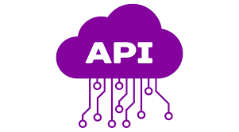

👋 E aí,tudo bem? Eu sou o Artur!
Sou apaixonado por resolver problemas com código — e transformar ideias em soluções reais! 💡
Atualmente trabalho com desenvolvimento web usando Angular e Laravel, onde implemento interfaces, crio APIs e cuido do backend com PostgreSQL. Também manuseio servidores via FileZilla — sempre buscando aprender mais a cada push no Git. 🚀
Este é meu portfólio, e ele está em constante evolução (assim como eu). Vamos explorar juntos?
🎓 Formação
"Aprender é meu combustível diário."
2023 - 2025
Faculdade Veiga de Almeida (UVA)
Curso superior em Análise e Desenvolvimento de Sistemas. Aprofundo meus conhecimentos em engenharia de software, bancos de dados e desenvolvimento de soluções modernas com foco em alta performance e escalabilidade.
2021 - 2023
Instituto Santo Inácio
Curso Técnico em Programação. Tive contato direto com lógica de programação, estruturação de sistemas e construção de aplicações web desde a base, incluindo HTML, CSS e introdução a frameworks modernos.
💼 Experiência Profissional
"Cada desafio profissional molda minha trajetória como desenvolvedor."
2023 - Atual
Crase Sigma — Desenvolvedor Web
Atuo como desenvolvedor full-stack em um sistema legado em PHP, utilizando Laravel no backend e Angular no frontend. Trabalho na implementação de novas funcionalidades, correção de bugs e otimização de desempenho. Utilizo PostgreSQL como banco de dados e contribuo diretamente com soluções que aumentam a eficiência e escalabilidade dos processos internos. Um dos destaques foi o desenvolvimento da funcionalidade de locação de imóveis, que solucionou um problema recorrente na plataforma da empresa.
2022 - 2023
Atlanticont LTDA — Estagiário de Informática
Atuei com suporte técnico e infraestrutura, realizando atendimento remoto e presencial a clientes. Fui responsável pela manutenção de hardware e software, resolução de problemas com impressoras e instalação de sistemas, o que ampliou minha visão sobre ambientes corporativos e atendimento ao usuário.
2019 - 2022
Bené Herzl — Jovem Aprendiz
Experiência na área administrativa, onde desenvolvi organização, responsabilidade e disciplina profissional — habilidades que contribuíram para meu desenvolvimento pessoal e minha comunicação em ambiente de trabalho.
Veja alguns de meus projetos:
Portfólio em React
Primeiro projeto utilizando React com json-server como backend local para gerenciar projetos.
Ver ProjetoGerenciador de Produtos
Software para controle de estoque feito em Laravel, Bootstrap e AdminLTE.
Ver Projeto
Consumo de APIs
Aplicação para treinar consumo de APIs externas e ampliar conhecimentos em integrações.
Ver ProjetoGeração de Cartas
Sistema que cadastra clientes e prédios, gera cartas de cobrança em PDF e envia por e-mail.
Ver ProjetoContabilidade com Gráficos
Sistema de contabilidade com relatórios em PDF e gráficos em Python para análise financeira.
Ver ProjetoE-commerce
Projeto de e-commerce em desenvolvimento, feito em Laravel integrado com React no front-end.
Ver Projeto🚀 Meus Frameworks e Linguagens
Essas são as ferramentas que me acompanham na missão de codar o futuro!
Angular
2 ano+
Laravel
3 ano+
Bootstrap
2 anos
React
2 ano+
TypeScript
2 ano+
PHP
3 ano+
HTML
3 ano+
CSS
3 ano+
MySQL
3 ano+
📬 Vamos conversar?
Ficou interessado(a) no meu trabalho ou quer bater um papo sobre projetos? Me mande um e-mail ou conecte comigo nas redes abaixo! 😄